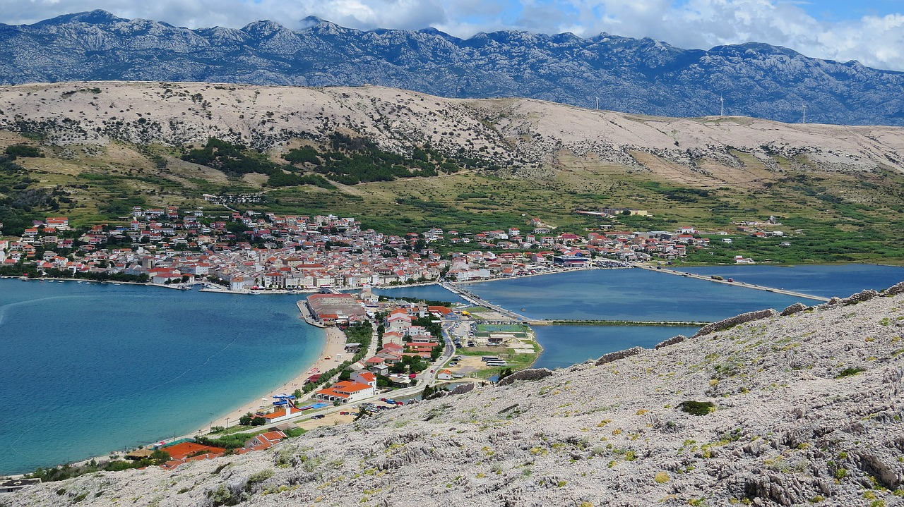

This website is about Pag. Pag is a Croatian island in the northern Adriatic Sea. It is the fifth-largest island of the Croatian coast, and the one with the longest coastline. If you'd like to find out more about Pag island visit the following website. We're sure that you're going to fall in love with this island. Thinking about relaxing with your family, or maybe you fell like partying. No worries, Pag got you covered either way. See you soon!
